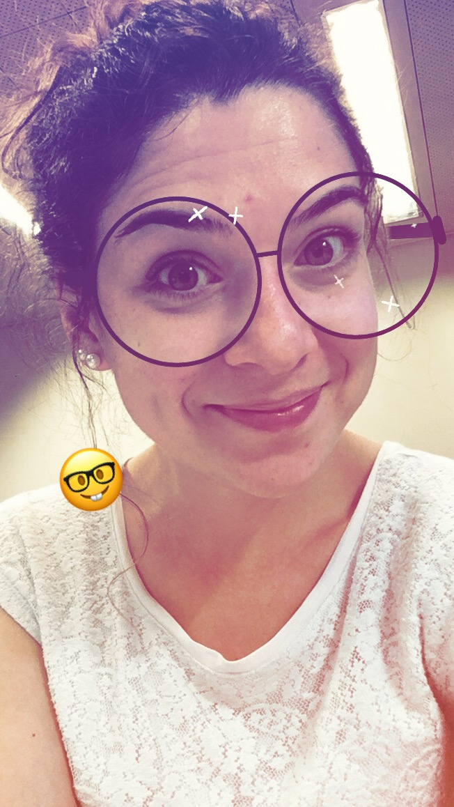

Hey there! I'm a Ph.D. student in EPFL currently working on subjective and objective quality assessment for video. Sounds simple, right? Well nothing is as it seems - but I must say it is fun!
You will find many diverse topics in my background. I've been involved in projects concerning biomedical image processing, speech processing, graph signal processing... Basically I process whatever's within my grasp.
If I'm not processing then I must be running or cleaning or shopping or cooking or reading or watching tv shows.
Fun fact: I once turned orange because I ate too many carrots.